Apple Silicon · macOS 26+ · Signed and notarized · Experimental
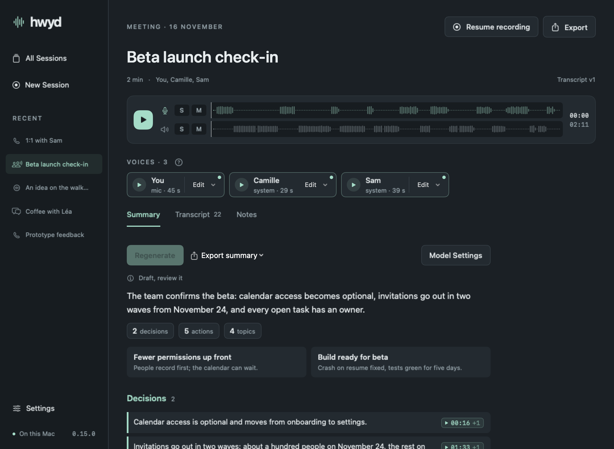
A session opens on its summary.
ONE MONDAY
A day, from the first idea to “how was it?”
Follow one ordinary day: a thought on the way to work, a check-in with Camille and Sam about a beta launch, and the evening when you try to remember what was decided.
Voice memo
An idea on the way in.
Say it before it is gone. Press ⌃⌥⌘R from any app and recording starts, without bringing a window forward. The menu bar icon shows it is running and lets you pause or end it.
The shortcut is configurable in Settings and needs no Accessibility permission.
⌃⌥⌘RFrom any app. Again to stop.
Before the meeting
The meeting is about to start.
Your calendar knows. A reminder offers to join the call and record, or to record without joining. Starting by hand? Name it, pick a type and the language. Before a session with other people, Start waits until you declare everyone present informed and agreeing: the stamp keeps the time, and so does the session.
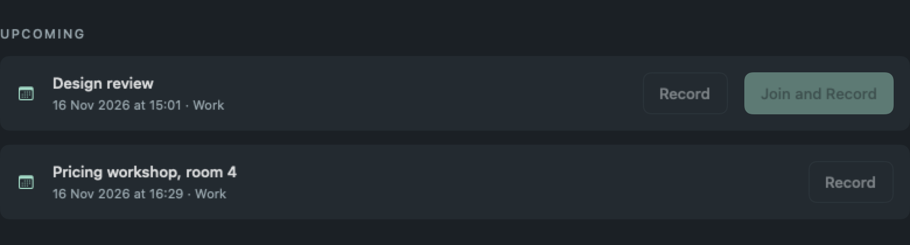
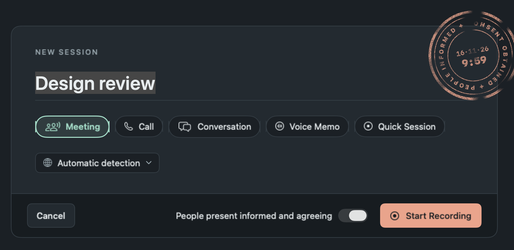
Recording
Be in the room, not in your notes.
Your microphone and your Mac’s audio are recorded on two synchronized tracks. Jot a few words when something matters; each note is timestamped. Pause when the discussion goes off the record: nothing is captured until you resume.
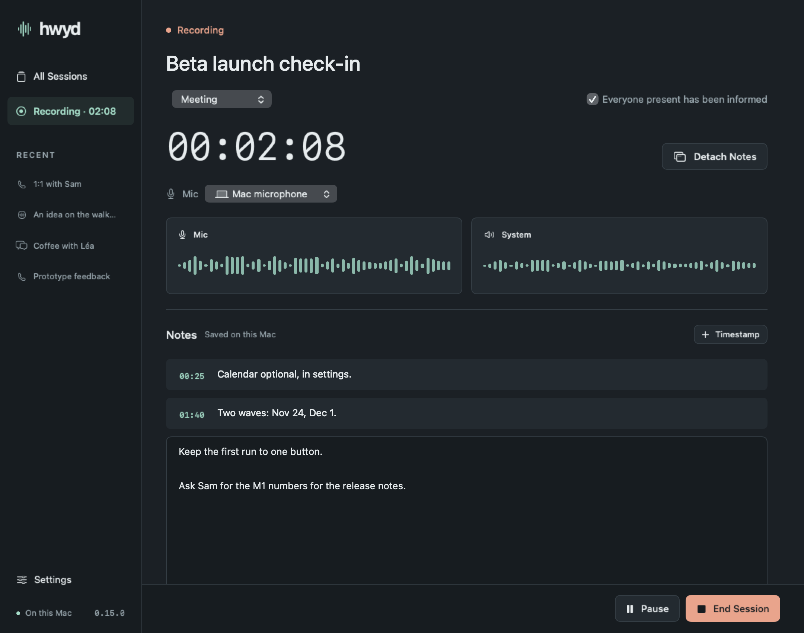
Your AirPods just connected. HWYD does not follow silently: it asks whether to switch, and warns that a headset microphone lowers what you hear. Unplug a microphone and recording continues on the default input.
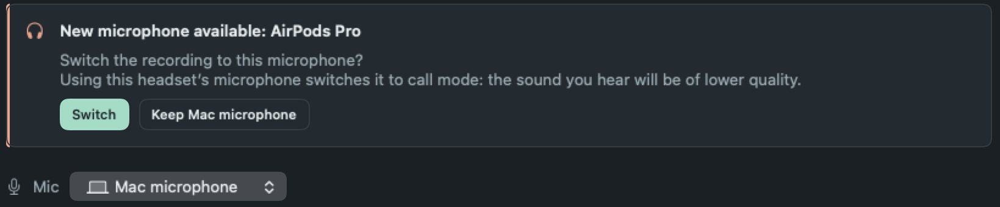
Stopped too early? Resume recording picks the session up again for 24 hours, notes and all.
Transcript
Who said what.
The transcript is written on your Mac by Apple Speech, in the language spoken on each track. Each detected voice gets a tile: click it to hear only that voice, then name it, confirm a suggestion, or ignore the echo of your own speakers.
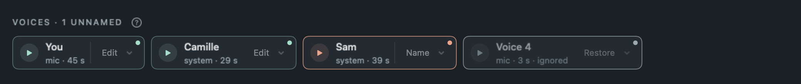
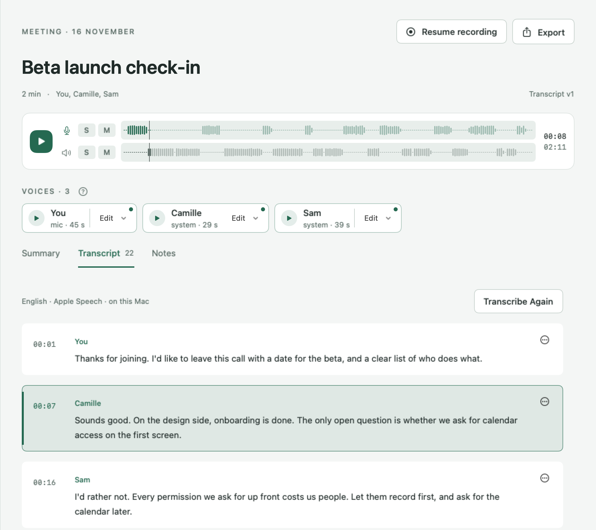
A voice is remembered only when you choose to, person by person. Every suggestion waits for your confirmation, and a voice correction can be undone.
Summary
So, what did we decide?
The summary lays out the overview, decisions, next steps with their owner and due date, then the details by topic. Each point carries the time it was said: one click plays the passage, so you can check before you quote it.
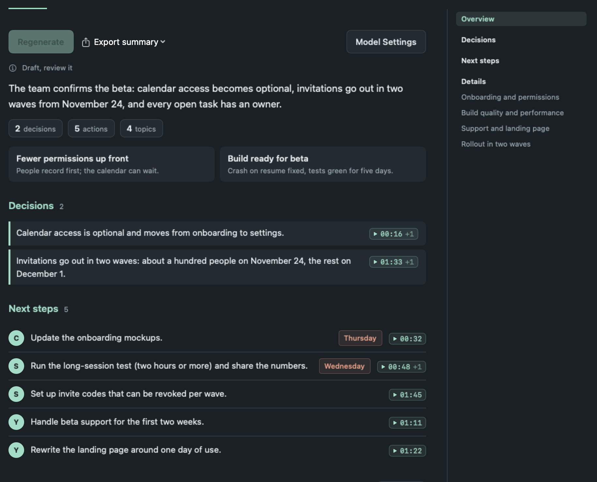
You choose who writes it. A local model server such as LM Studio, a hosted provider with your own API key (Mistral, OpenAI, Anthropic, Gemini), or your own coding agent: Claude Code, Codex, Gemini CLI and others. An agent can add what it knows about the people and projects, in a separate Context section.
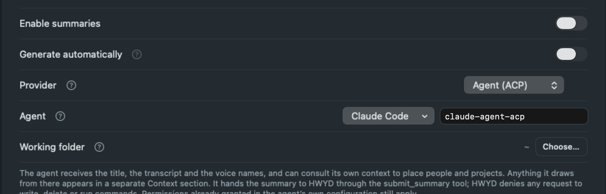
Summaries are written in English or French, following the language you choose for HWYD. Turn on automatic summaries and one starts as soon as the transcript is done and every voice is named.
Sharing
Pass it on.
Export the summary as PDF or Markdown and pick the sections. Context notes from your agent start unticked, since they may hold private information.
Your own tools can read every session too: versioned Markdown and JSON exports, and a standalone MCP server for your agents.
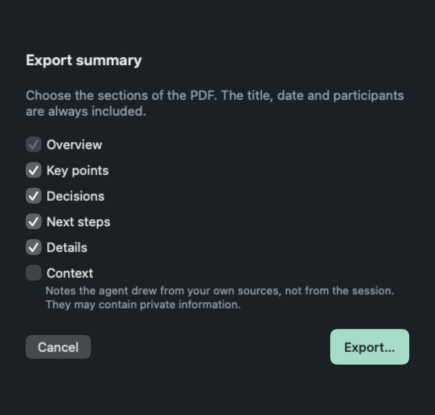
Evening
How was your day?
Everything is in one place: the coffee with Léa, the idea from this morning, the check-in, the 1:1 with Sam. Search titles and what was said, filter by type, and open any session right where it matters.
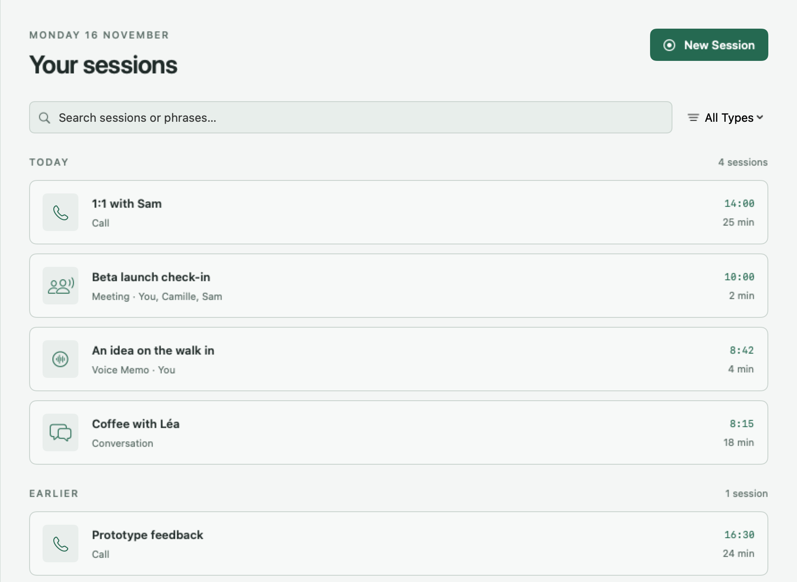
Screens rendered by the app from a fictional day. The voices are speech synthesis; no microphone was used.
BUILT TO STAY CLOSE
Your Mac. Your context.
Audio stays on your Mac
Recording, transcription and voice separation run locally. For summaries, you decide where the transcript goes: a local server, your own agent, or a hosted provider you enable with your key. Audio, notes and voice prints are never sent.
Recording is your call
Every recording starts with an explicit action and a visible state. Your declaration that the people present agree is kept with its time, in the session and its exports. Voice memory is a separate, opt-in choice for each person, and you can see, withdraw or erase what each session added.
Yours to keep, or to delete
Export Markdown and JSON, or let your agents read sessions through MCP. Voice vectors never enter exports. Deleting a session deletes its audio.
HOW WAS YOUR DAY?
Keep something from it.
For Apple Silicon Macs running macOS 26 or later. Signed, notarized and updated from within the app.
Capture and speaker identification are experimental: transcripts and summaries still need review. HWYD records your consent declaration, it does not collect consent from participants. There is no app-level encryption or automatic audio purge yet. Read the current limitations ↗